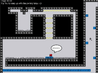
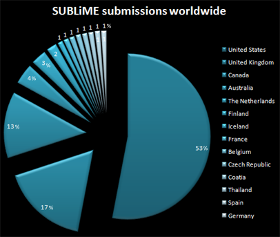

#13 1 2004-04-04T08:05:11Z Triple T Tower World, my first level
(it was made with the object bug, took a lot of work)
Attachment (lost): post-10-1081445810.txt
#21959 2 2004-04-04T18:22:04Z Triple T I just can't find the "Insert file" button
#21962 5 2004-04-04T18:29:43Z Triple T But with the save feature there would be no good reason to have that terrible time limit. Hurraa!
Maybe there could be used a key for rolling/crouching. You could fall into a roll with less damage (from a greater height). You could crouch through rough passages or under dome mines. And mainly a ninja without a roll is half as cool than if he had some.
#15 1 2004-04-04T18:37:49Z Triple T After some time I play, the sounds just stop playing. When i restart the game, everything is OK. It usually takes about 4 levels for the sounds to stop.
#21977 3 2004-04-05T17:22:23Z Triple T It happens always when I play the campaign, I don't think I have the same problem with custom levels.
When I go to the main menu, nothing changes, the demos play without sounds.
While playing I usually don't perform any special actions at all.
#18 1 2004-04-05T17:36:11Z Triple T Eat It
easy medium
Triple T:
2004-04-05
Attachment (lost): post-10-1081445714.txt
#22093 16 2004-04-08T17:28:32Z Triple T I want new level system (you can choose any level you've already been to) or some saves, no ovens
#22094 3 2004-04-08T17:37:39Z Triple T ...and of course, the second one
Attachment (lost): post-10-1081445859.txt
#22095 5 2004-04-08T17:38:44Z Triple T fixed, i do not connect very often, sorry...
#22096 7 2004-04-08T17:46:49Z Triple T I just can't find the "Insert file" button
He's talking about attaching files to your post.
That's very right. Now I know how to insert a file.
#22562 7 2004-04-25T05:41:45Z Triple T you don't have to pay to play Soldat, just if you want to unlock small things like coloured smoke in your jet boots.
or make an account for everyone (this feature is useful)
#150 1 2004-05-01T12:17:54Z Triple T I'd prefer level selection because it makes me really nervous to play the same starting levels everytime I try to beat an episode (to save my progress). I just can't play one level half an hour because it's too tough for me, so i quit it. But later I want to try again and have to get through the starting levels of the episode. And that's what makes me fell like

...and I didn't know where to put this thread but I'm really
complaining! (about the system)
#22744 4 2004-05-01T17:32:50Z Triple T It's just below Escape, it's often used to activate console, after you've pressed it you'll see a simple menu.
#22745 9 2004-05-01T17:44:55Z Triple T I found N at GameHippo.com
Now all the freegame magazines in Czech Republic are releasing it...
#22746 18 2004-05-01T17:48:30Z Triple T I'm 15.
#22747 6 2004-05-01T17:57:29Z Triple T Stick Soldiers is a piece of crap... Soldat rulezz!
elma is one of the best
NWN is the best RPG, Morrowind gets reallly boring after a few hours.
KKND:Krossfire is the best RTS I've ever played. I play nearly no RTS' since I've played KKND because none is so cool.
LBAs were perfect.
#22768 10 2004-05-02T05:39:53Z Triple T It's good to see a level using this "feature", maybe there should be a level like this in official pack (or is there one?). Anyway, I find it too hard to make this special jump, you have to have luck to do it, it should be more accessible.
#22769 10 2004-05-02T05:49:36Z Triple T Stick Soldiers is a piece of crap... Soldat rulezz!...
That's if you're referring to the original, SS1, which is for... uh, I assume old-to-new-school gaming 
And, like I said, that's what SS3's for  More modability than even the almighty Liero>:)
More modability than even the almighty Liero>:)
Keron, you are not right. I was referring to SS2, really, I don't like them. I've heard in SS3 there will be aiming by mouse, that means it will be much more like Soldat, except about a quarter of playability.
Daddaluma, you are right. Spelled: "Krush, Kill 'N Destroy: Krossfire"
I thought everyone knows this game...
#22788 13 2004-05-02T16:37:29Z Triple T Actualy this Jump is very easy. When you get lunched with the pad, and you fly over the pad and fall on the pad, you must go a cilantro in the opposite direction then jump. Watch the replay more closly...
Yess, I love this move, I managed how to do it a few minutes after I disconnected. Then couldn't reach the forums 'til now.
#157 1 2004-05-02T16:42:25Z Triple T You will probably find this one very easy, I made it just for fun. It's using a few ideas, so no demo is integrated. Yes, these ideas are not my personal ones but I invented them on my own.
So just write This one is soo easy but actualy I enjoyed it.
Attachment (lost): post-10-1083612304.txt
#22818 5 2004-05-03T19:24:14Z Triple T Looks like I made this level a cilantro more difficult than I wanted... Actually I like easy levels. Maybe next time.
Getting into the exit door isn't so hard if you use the chimney on the left to get to the top again.
#22819 3 2004-05-03T19:30:34Z Triple T Levels are always easier the second time around. Its not like you have to go through 20 levels to get back where you were, its only five. Plus, what if it saves after every level and it saves with 2 seconds left... how are you going to beat the next level with two seconds?
If you are suggesting getting rid episode time and make level time? That would totally ruin the carefully planned timing of the levels. That's what makes some of the episodes hard, having 20 seconds left on the last level.
-John
No, I was actually suggesting to keep the episode times for on-line best times and also use separated level times. And I don't mind if I save the game with 2 seconds left if I can overwrite it later. I'm sure I have played a game with such time-saving. But I better like Elma system, this would really need whole new levpacks.
#22845 7 2004-05-04T17:46:17Z Triple T I have tried Eternal Daughter. It looked as a nice and hard RPG at the beginning but as I got further (into the "forest") it got harder and boring. That's why I quitted it after 10 minutes.
#22891 5 2004-05-06T17:58:32Z Triple T Isn't that what N v1.2 is for? :huh: It lets you select individual levels, doesn't it? 
I quess not, it lets me select individual episodes.
You can select individual levels by cheating but I never use cheats.
Anyway, I think elma is an important game. It is very similar to N in many ways for me. You use absolutely intuitive controls to make dozens of tricks based on real physics. You can always play it just for fun. You can always select one level you just like. Wouldn't it be good to have this choice in N?
If you haven't played it, download it!
#22892 4 2004-05-06T18:09:48Z Triple T Turning of sounds will be good.
hehe, the game is turning the sounds off automatically for me. After 15 minutes of playing.
#22893 12 2004-05-06T18:18:41Z Triple T Apparently you don't realize why I emphasize SS3 so much. You'll be able to modify virtually anything, whether it be robotic gun turrets, electrical weapons, possibly even vehicles, and so much more... *drools*
That would be nice... It's just a project.
Hey it will do have an scripting language?
#22952 8 2004-05-10T17:34:21Z Triple T Try this:
(looks like full version...)
If you don't know Marshmallow Duel and have a friend to play with, I guarantee this is the best 2player 1pc game.
(you must extract the files to C:\mduel)
#22970 2 2004-05-11T18:18:28Z Triple T Yes!! But just a lightsaber...
#22971 22 2004-05-11T18:22:19Z Triple T I want ninja to become a jedi knight. He would attack the drones with his lightsaber and use special abilities.

#22991 6 2004-05-12T18:23:26Z Triple T Yes, that's why we need more enemies.
#22992 2 2004-05-12T18:32:11Z Triple T Bullet time is not necessary. Controling this feature would be harder to master than slashing with a sword. And the game is slow enough already.
#23030 11 2004-05-14T18:28:04Z Triple T one idea noone's mentioned (which is another non-aggresive use fo the sword) is deflecting bullets, sort of like a sheild -- if you have the sword equipped and are standing still, you'll automatically block incoming bullets.
hey, i think lightsaber has right this function
by me, Lightsaber really fits in a game like N
and there would be finally some colors implemented

#23031 4 2004-05-14T18:32:40Z Triple T Without Cheats!!!
hey, you think someone plays with cheats?
no, don't even tell me there's a


cheater between us...
#23450 22 2004-06-03T18:05:32Z Triple T The only way to escape a bullet is to be fast enough. In fact the whole game is part-based on speed. We've already seen this in Elma. And just like in Elma, the only way to change your direction and not loose time or life is to bounce. You have only 3 keys mapped and usually a few seconds to arrive to next suitable wall for a bounce. That's quite enough time to get ready to press the jump key. Bullet time would take place in this game if there were combos hard to perform or some other multikey actions. (I hate combos and I love this game.) With bullet time added, the gameplay wouldn't change at all.
#23451 13 2004-06-03T18:15:59Z Triple T I like episodes. It makes you work harder for more levels. Anyone can just pop to a level with the default gold count and beat it, but with episodes you have to do good over a couple maps. And that way, you can grab a ton of gold and be careful, or you can race thru it at breakneck (break leg? that's more common) speed.
Of Course, the option of playing single levels would be only optionable, probably not usable in the episodes already released and mainly just for fun. I played Elma just for fun but I cannot play N this way because of the episodes.
But, I think levels should be available after you beat the episode. Maybe have it so you have to beat the episode past it to unlock (you have to beat 04 to unlock 03 levels), so you've got even more reason to beat another episode. And once you beat all the episodes, all the levels are unlocked.
These are not bad ideas, certainly could be applified on the already released episodes.
#23572 6 2004-06-07T18:42:23Z Triple T one thing: once you start playing Gish, it'll take a long time to stop, especially if you have a gamepad and a friend
#23594 8 2004-06-08T19:44:48Z Triple T Does Gish has a level editor?
No, it doesn't have an editor, but there will probably come one in the next update.
#25054 6 2004-07-17T09:44:48Z Triple T yeah yeah plzz
actually i always wanted N to be 2 player, because my brother plays it too and is a cilantro better than me.
well and it doesn't have to be only coop, there could be a collection mode (like Greed in Gish) where every player tries to collect the most. and also like in Gish, player 2 could be grey, or even white, and it wouldn't look that funny.
#25229 2 2004-07-23T17:42:14Z Triple T have you played Jedi Outcast? - the roll could also soften a fall a bit. that reminds me - ninja really should stay in one place for a moment as a penalty for too hard and too vertical fall.
#27389 4 2004-09-10T17:26:04Z Triple T You know what? I hate CTF_Death (in Soldat, in N it's quite cool). Can somebody tell me why there are so many people playing it?
#27456 24 2004-09-11T14:22:44Z Triple T and so my old topic was resurrected...
i just want to say that the problem of level selection was fixed very well by coming of the time trial mode. if i want to play just for fun (anyway, is there anything else i should play for?), i choose my favourite level in time trial. but i'm really missing level names in the selection screen, there is no way i remember more than 5 level numbers.
#29522 4 2004-09-27T18:32:39Z Triple T He might just not be posting often, I do that a lot with the Brainburst forums, I'll go months without posting at all. Perhaps he's taking a hiatus from N for a while.
He's not the one that doesn't post for months. It's me to be like that. He's been always commented everything, one of the first members (asas me, I'm quite proud to have this number). If he's got a new favourite game, it's cruel from him not to tell us, because it just must be a masterpiece.
#31918 12 2004-10-13T19:07:16Z Triple T yess yess i want jedi knight style: when you land from a high height, you have to roll to cover the impact damage (doesn't matter if automatically or by pressed down arrow). that moves you a few squares whether you want or not. height of ninja could be counted half while rolling, then it would be a new puzzle element. that would be great.
#1103 1 2004-10-14T17:41:43Z Triple T i've got a cilantro problem.. a few months ago i made a map. i cannot beat it now. so help me.. i only hope it's possible.
Attachment (lost): post-10-1097775703.txt
#31987 8 2004-10-14T18:05:12Z Triple T The 2-p mode has already been discussed, by the way.
of course it has, can't you see it's just the best idea, that will not stop returning in new incarnations?
2-p mode would definatly screw up the whole idea behind N because the levels and the AI was made for 1 player so they'd have to re-write the whole thing
and it would make a PC lag like hell because of the massive amount of physics calculations you have to make then
once i lived in a city. i had many friends there so i highly appreciated every hot-seat game. i lived by playing Marshmallow Duel and HOMAM and Elma and others. now i live in a small village but that doesn't make me think hot-seat multiplayer is unnecessary. actually, the first thing i was looking for when i found N was hot-seat mp to try it with my brother (he likes N too).
for me, N was born to be played in two. with a few new moves, ninjas could cooperate. other reason: one screen simple map without fog of war. and as it was discussed earlier, many people would pay a piece of performance (or p.e. half of the map) just to play in coop mode.
did i want to comment something? oh: we have ned, new maps can be written. high-end computers don't sleep, nor they know what is lag. AI could be simplified/adjusted/rewritten.
#32149 5 2004-10-16T06:32:32Z Triple T You used an entire thread to post one map, asking if it was even possible, and it turned out fairly easy? Its cilantro surprise you did this while tsuki was on vacation. So, in his abscence, I will post relevant quotes.
holy... living... bake.
Do you NOT know how to read? You haven't seen the countless posts, presumably mine, complaining bitterly about devoting threads to this kind of idiocy? Seriously, you've got to be brining illiterate or something.
Just... the fact that you:
1) Devote a thread to one level. Completely stupid, wasteful, against the wishes and better needs of this society and all that it stands for... you still decide to disregard all of that and fulfill your masturbatory desires by starting a whole new brining thread and hoping people will marvel at your map-making skills and throw money and their first-born children at you... why... to have your 10 seconds of glory before someone yells at you because. . .
Quote
He knows what he has to do, he knows the conventions, having frequented the forums for a month or more... and he still decides to spit on all that and pull this BS on us? Shyah, right!
And, in my own words, about the map:
Its not THAT hard. The beginning is clever, but if you think about it its easy. The rest is easy, except for going back into the exit room, which is NEARLY impossible (but if you can get up, then you can get down with a light enough touch). If you added some gold on all the curves and moved the exit so you didn't have to go back, it would be good. But NOT worth a whole thread. We've only got 12 left!
now i say this: if i just wanted to show my map, i'd post it on Numa. noone plays maps on Numa, though, and i really wanted to know if that map is not impossible to complete (so i can post it on Numa). and guys here on forums are quite tough, jumping like kids everytime they see a hard map. you see, i've only beaten about 33% of N levels. soo...
i made an original thread (not "look at all these maps i've created")
the next time i will start a thread here, it will probably be about one map, or one principe, again. if you want just to see a list of my maps, go to Numa (name's Triple T).
and what suxx are all the threads here about dozens of maps from an author (well, there are not so many of them)
#32183 11 2004-10-16T15:37:22Z Triple T Look, I'll make it simple. While Tsukatu is away, I am filling in. That means that if you do something that he would rag on you for, I have to do it. It doesn't mean I dislike it, just that HE would and that I am doing it for him. Although I do believe this map wasn't quite worth a thread. Of course, some are, such as one demonstrating a new trick. But not one that the author just doesn't think is possible.
hey hey i didn't think it's not possible. i just.. didn't want to test if it is possible by myself. i don't like hard maps, and i rate this one as hard.
No-one plays maps on Numa? News to me.
In fact, I count 519,109 (yes, half a million) hits to the map pages (not the whole site, just the map pages) since 22 August. I'm sure at least one or two of those resulted in someone playing one of the maps, maybe?
nice argument... actually, i was talking about myself, i'm the one that doesn't play maps on Numa, nor do i play the ones here on the forum. i tried a few maps, then decided not to try anymore. it's just: i dl a map, start it in N and see it's unorriginal and/or too tough. but i've got this dial-up connection, so i cannot just sit connected and try one-by-one. 2 possible solutions: a big archive containing all the maps or a selection. an automatic map downloading/updating system. until then...
oh yeah, and there are map packs made by a single author, but sorry, they are almost always made in one evening and don't even touch the expected quality. please gimme a prove i'm mistaken..
#32359 14 2004-10-17T06:24:48Z Triple T Try GC's level manager!
wtf? (where to find?
And come one, the maps are hardly more than half a dozen K's in size, that's tiny!
oh yeah, that's what i like about them the most. and what i dislike the most is that i have to perform so many actions to actually play them, and the whole system presumes i'm connected while doing so. so...
#32583 9 2004-10-18T18:03:52Z Triple T Quote
other good, short, addictive games:
-anything by kenta cho (especially a7xpg and parsec47)
oh hell no, rRootage is da best!
anyway, surely one of the most addictive games ever is Elma. it's not that hard, still imo the best physics-based game. it's that you can learn very many tricks with very simple controls, and you never feel like you're performing some key combos. and it's also great fun, of course. but hey - you all already know this, don't you?
#33703 2 2004-10-26T18:21:34Z Triple T oh thanks,. i love baloons
and you know what? i hate these birthdays..it's always the same..
#1438 1 2004-11-21T08:07:31Z Triple T You can find it at
Glace Homepage.
First thing you should know: this game is easy, much easier than N. Second thing: it's not made by me, I just wanted to get some more people to the forum. It has some physics and slightly reminds me of GISH. But it's bitmap based, so more retro. And what are the main pros? Storyline (not very epic

), gameplay, fun (till now I've played it for real hours). If you think N is too tough (and I think it is) then try Glace. Otherwise try it too. And - it's a bit kiddish in style, but - whatever..
#37452 3 2004-11-22T19:10:33Z Triple T You know what? Some people think it's even
better. Oh, I'm one of them. It's not as good as N in some ways, but on the other hand it shows original ideas in a very playable form (just like N), and that's important for me. It certainly is not another Mario clone, new stuff is p.e. nice effects and weaponry. It's always about the small new things, new aspects, otherwise I wouldn't play Glace, N, Elma and many others.
Afterall I'd give it a 9/10, there are still so many other games to deserve the lower marks (just to compare - I'd give N 9 points too, the difference is in overall style and percents in rating)
#37582 10 2004-11-23T18:28:28Z Triple T Andrzej Sapkowski! And also George Orwell.
#38921 2 2004-12-01T19:35:33Z Triple T Maybe I'm wrong. Wasn't there somehing really strange about N review at GH? Like it gets about 7/10 in a review, then gets updated and suddenly receives 10/10. Actually I don't know why I think this could ever happen..
#41505 13 2004-12-16T19:04:18Z Triple T Control rulezz! But I never press the right side one. I think control is the most accurate key, followed by shift and alt (well alt not that much since these windoze). Space is the best key for the most destructible weapons, that are used at the end of the stage (not in N, of course
).
#1786 1 2005-01-11T19:25:46Z Triple T (i only hope no one was brave enough to come with something like this so far)
1. why people add gold nuggets to the levels? alright it may look good and hide switches and add some extra challenge value, but why place dozens of them?? well i don't know how it looks like outside, but here at my computer these maps have really annoying loading times.
2. why people make maps so difficult? imo maps are much better when you can win - let's say - after 10th try, and they compensate lack of enemies by innovative design and new puzzle elements.
and the point - at numa i rate maps also by these 2 (bad) aspects. that means that when you try to make the map sexy for some people by for example placing 50 gold nuggets or addind a passage filled with thwumps and mines, you totally screw it up for me, even if the base design is very original and a puzzle element is hidden in the last room at the bottom.
is there a single soul that agrees with me a little?
#45833 6 2005-01-12T18:56:55Z Triple T The same goes for the other items. Do you think it was ever intended for a normal door to be a tiny, insanely-hard-to-on platform? Or for thwumps to be used for a wall of death? Nope.
This seems like another issue to me. I agree that these door or thwump uses make sense. I also agree that placing one gold nugget into a corner makes sense. But I don't agree when you place 2 nuggets to form a lovely couple, because you will probably want to create some other couples as well. Alright, somewhere even such couples make sense, I just don't like maps where nuggets form a 3x3 filled square, although only 4 of them would be enough. And I don't believe in some aesthetic value or such things in this issue - for me it looks much better when these additional challenges are marked by single golds then "rooms filled with treasure".
And that difficulty.. My problem probably is that I only spot hard or bad maps. I cannot say that there's some additional value in map that can be won in half a minute, but I'd surely give such map a 4/5 rating if it was good - original, fun, you know.. But what can I give to a map where I can't pass the first obstacle..?
And the point: at Numa, some kind of difficulty rating should be included.
#45980 8 2005-01-13T18:47:17Z Triple T Well, and why don't you comment what I'm really talking about, that as you make the map nicer with these cute lots of gold, you double the loading time..? And this, combined with frequent restarts caused by high difficulty, seems...bad to me. And then, N is about gameplay, not eyecandies.
#46130 13 2005-01-14T18:46:42Z Triple T no way does adding 25 gold (about what I do per level) double the load time... That's sad if you think that. N is about gameplay, and an aspect of gameplay is how the level looks while playing it, and the challenge of going for the gold (litterally in this sence)
Alright, 25 _is_ ok, but not better than 0 of them. And then, I'm not talking about your maps anyway. When there are lots of gold in the level, you will notice that in loading time.
Level look is an aspect of gameplay? News for me.. And challenge can be made even with a single gold nugget, or cannot it?
Based on polls I've seen, most folks have beat the game around here. Therefore, "easy" maps are generally frowned apon. From experience, most of the easy maps I've made have had worse overall ratings than the hard ones.
Yes maybe this is my problem. While I was away, N became game of N-players, not just-players. I'm still an ordinary man and play N maximally 1 minute a day, but I believe it has some future, just because the game itself is awsome.
#48235 40 2005-01-27T19:25:30Z Triple T *signs*
I mean I sign too although I'm not very involved - my maps don't get a single vote.
#50582 18 2005-02-16T18:31:02Z Triple T Voted, too.
#50584 167 2005-02-16T19:17:32Z Triple T Is this map screaming for votes?
Factory
It didn't get any vote but it got one cool comment, that's why I think some people might like it. And - you will probably find it very easy..
#50674 170 2005-02-17T21:05:54Z Triple T the vote doesn't seem to be registering.
Maybe it's just because of the space character in my nickname (I don't see any other mapper with a space in the nick). The space character is restricted in N user login, so when I created mine (far after submitting Factory on Numa), it was Triple_T. Now when I login on Numa using this nick, I can only submit maps with no space character in the author field, so it could be alright now.
But I do not make maps anymore because I couldn't get any votes for the old ones. (Isn't that funny?)
So, if you want to rate my map, go to a new link:
Factory#67957 8 2005-05-19T18:04:50Z Triple T mayb u need 2 get speekers
I don't think the problem is in the speakers because, as I said, the sounds _stop_ playing, which should be easily understood as that the sounds were playing normally in the beginning and then all of sudden stopped.
Anyway, I've newly discovered that this happens a bit more frequently with my new processor (I'm a lucky man - I've downgraded from 1200 to 750 MHz, I'm learning to play with medium quality..).
#4174 1 2005-08-24T19:33:44Z Triple T Just yesterday I wrote a (very) short
N review at
TrueFreeware site.
In fact, I'm just here to promote it a little - it's great but really suffers from lack of members.
#93865 7 2005-08-24T19:40:53Z Triple T I think that if no one else, than at least gohan knows about jumper - and for some time now.

This image can be found at
N Downloads section which doesn't seem to be updated often.
#93872 3 2005-08-24T19:56:44Z Triple T Finally! A review that hasn't used the same exact words as the other reviews!
geeze, thanks! I expected the worst replies possible but it looks like the community around here's still nice to people.
And actually, it took me about half an hour to write a 1001 byte short review and then I found out that there's a 500 byte limit on that site!
And if anyone wonders - it's not my site, I'm just a part of it's (small) community.
#93875 5 2005-08-24T20:15:03Z Triple T Quote: "Keron Cyst"
*Complex* physics, Triple T
They seem simple to me - you don't have to think about them much while playing after all.
Quote: "Keron Cyst"
webpage bug
kinda...? Actually I don't know. I can ask admin (but he doesn't seem he likes me much so I rather won't. What's the english word for czech "submarine illness" by the way?)
Might want to include some stuff about the gold, too, if that doesn't take up too much more space.
I ensure you it _would_ take up _too_ much more space. But if you manage to create a 48 byte long sentence that would cover everything you're missing in the current description, just use the
Modify option.
#94200 10 2005-08-26T07:37:21Z Triple T N is CPU-expensive because it's written in Flash. There is NOTHING else that deteriorates its speed in any significant manner.
yeah yeah I know. I'd write it in there but I didn't want to exceed the length limit (seriously). I think N is CPU-expensive because it's written in Flash AND it's heavily based on simple physics.
#299988 95 2007-02-22T20:40:54Z Triple T What will be the control scheme with Xbox 360 controller? I own one and would like to roughly try the new controls.
Will the new version feature all of the original levels? Will it have the same map format? Will it be possible to transfer maps to and from N+?
I'm quite excited about the project and I would like to at least sense what features and gameplay it will provide.
#300643 98 2007-02-24T16:16:12Z Triple T Hope you stick around.
Well, not likely, I don't have enough time for visiting forums (this big, on top of that) regularly. I only noticed the news with the note on possible multiplayer and seeing there's so few info on the project, I just had to ask. After all, it's already nearly a month since the scheduled development start.
freakin' love your new avatar.
Thanks!
put a version on the Xbox Live Arcade?
So says the
news.
That won't happen because Microsoft would not want their X-boxes to be connected to anything but their own servers for security reasons.
Microsoft could (and imo should) allow Metanet to have a server for highscores. With that, integrating "NNUMA" would be possible (but imo hella difficult).
#327668 37 2007-06-05T15:37:47Z Triple T How much will physics in the various conversions differ from the PC version? I mean, I think I have read somewhere that N1.5 will have a new mode with "fixed" physics. It seems logical to integrate a clean(er) physics engine in the new (commercial) versions of the game. That would mean that most of the glitches that are sometimes used by map makers (already asked
here) won't work there and might actually disqualify a map, right?
How difficult levels should people prefer making? And should they prefer keeping the new levels exclusive for the new platform and _not_ converting them back to N1.4 / NUMA?
I like the idea that DS and PSP versions of the game will (?) have separate level sets and thus provide very different experiences (and perhaps justify buying both of them) although they are (?) made by the same studio.
#333065 51 2007-06-19T16:57:45Z Triple T February Stars by Foo Fighters with 32 plays according to
my Last.fm.
Hldm tkavou by Ob broskev with 22 plays according to my WMP.
I actually started using WMP instead of Winamp by the beginning of this year because the new version reminded me of PSP.
I used to listen to Gigi d'Agostino a lot with 700-like playcounts on some tracks but that was long before Last.fm. Luckily I'm provided with more music nowadays - not that it gets any better.
It would be Soldiers of the Wasteland by Dragonforce if it were most listened to song by time, as it is about twice as long and only 2/3 the plays
I too would be interested in "playtime" statistics because I've been listening to 60+ minute d'n'b sets quite a lot lately and those things don't crawl up the ladder that easily (my top is
Kosheen's Drum 'n' Bass Reborn with terrifying 29 plays - I hope they're at least half fake).
#333074 21 2007-06-19T17:45:16Z Triple T I chose "No" because even mere talking about the secrets' existence and about conditions of their acquiring is somehow driving me mad (I guess I'm very spoiler-sensitive). And yes, I hate this whole thread.
I'm not sure why 99% of this community is so die-hard purist in keeping N the "pure" game where all secrets are tabooed
I think I know why: Mare and Raigan stated very clearly (some time ago *blush*) that everyone should keep the secrets _absolutely_ secret.
#333505 203 2007-06-20T16:12:55Z Triple T This contest (the prices and new map dimensions along with the deadline) gave me a reason to start mapping again after a long time (and it turned out into some radial designs I hadn't tried before) so yes, I liked it. I would prefer a longer schedule for sure because I had some exams almost every day at school.
The main think that I think was wrong with SUBLiME was the way that we were kind of mapping in the dark.
I agree, and it's a bit ironic that it might be an issue in the hypothetic 1.5 contest as well.
I feel at least a little stupid, because I made maps for psp, DS, and XBLA, but I don't own a Psp or DS!
I submitted maps for all of the platforms although I don't own any of them. If I'm lucky, this contest will help me decide which one to buy (I think they're all great).
#336372 7 2007-06-27T20:31:44Z Triple T You can always count on czech servers not being up to date.
1.05:
click "BonusWeb.cz (701 kB)" (10 episodes)
1.2:
click "0.93 MB"
1.3c:
click "Sthnout n.zip (1.10 MB)"
As for the other ones, you can always ask Metanet I guess.
#336376 12 2007-06-27T20:44:29Z Triple T nvidia program it allows you to select an area of the screen and select fit to screen or something like that.
That's a screenshot program. It has nothing to do with resizing parts of the screen.
I do have a zoom feature bound with my nVidia GeForce card drivers that could probably be used for zooming the game's window - provided I had a 1584x1200 secondary monitor. Still, it's not that kind of scaling I'd like to get from vector based graphics.
You're playing the illegal version, just so you know.
What if he just downloaded an old were-supported version of N? I bet there are at least some instances roaming the internet.
#336378 8 2007-06-27T20:51:06Z Triple T In episode 89 i got an highscore for level 4 but not for level 3?!
That's probably because you got a negative score. Play the level in high scores mode to prevent this.
#336586 427 2007-06-28T12:20:02Z Triple T I keep a longer personal list. Here are three suggestions I haven't seen mentioned before:
- posssibility to remap controls in the game (inside an episode for example)
- in high scores and user levels screens: All-gold cleared levels and episodes have a gold/pink/whatever rim instead of black one (for added challenge), perhaps with an unlockable for all-gold clear of all levels?
- optional/unlockable: Guts! Blood marks and puddles that stay (after death, into the next try). I'd like a hard level to be a mess when I'm done with it.
As for the suggestions already mentioned somewhere, I really think bullet time would rock as an option/unlockable - perhaps with manual time flow control by mouse
- of course only for fun, discarding any progress made using it, maybe a part of practise mode.
#340884 16 2007-07-09T14:48:50Z Triple T Making maps without enemies
is fun. I made one for this contest:
http://numa.notdot.net/map/95656 Unfortunately, it's far less minimalistic than I intended. Also, the tileset is not exactly perfect. *gulp* Still, I think I followed all the rules.
#355730 32 2007-08-15T18:08:57Z Triple T 0.07
")
The amount of life I have is almost intimidating.
#365864 191 2007-09-18T14:49:18Z Triple T So the envelope has found it's way to Czech Republic as well. I was beginning to worry... (After all,
some diacritics were a bit off - a not so important lesson for me, I guess.)
As for the swag, it's really cool. I was in need of a button like that for ages - the model of the bag I use is very common in our household. Finding a good (enough) place for the stickers and the tatoos will be much more difficult. And the signed card is something I really appreciate.
Thank you for making SUBLiME possible! You rock.

#373699 11 2007-10-22T14:31:00Z Triple T I like the interview. It touches me where no interview has touched me before...
Quote: Nick
When we saw it we really liked it
"Press Start"! Very original.
Thanks for the kind words!
#373709 46 2007-10-22T15:16:09Z Triple T Meh. It's not the worst, but if I hadn't used it all over t3h Int4rw3bz to the point of no return, I probably would have changed it to something else several months ago. Alas...
Same here.
I realized the cruel truth that my nickname is unpronounceable in Czech years ago but didn't bother to do a thing about it.
A long time ago, I was working on this game with tanks called TTT (never finished). It's possible that the name originated as an abbreviation of something. A few months later, somewhere about the time of "internet boom" in Czech Republic, I was deciding how to call my new identity. The choice was simple, TTT seemed ideal - three letters fitted into arcades, it didn't sound totally awful (in english) and it was free (there seemed to be no one in the Internet with the same nickname). So I extended it to two words separated by a space to make it easier to read (another mistake, as some of you may remember from NUMA) and made some accounts...
#412153 111 2008-02-25T22:03:06Z Triple T ZOMG that video was awesome! it was far too laggy on my computer, but I got the jist of it. That rotating laser is pretty intense.
Can someone please link me to this? I just dont seem to be seeing it.
heatwave21 was probably referring to the
official trailer. Which (along with
one of the blog posts) by the way raises another question: the level with the rotating laser seems quite similar to _PSP_ Sublime winner
sun is shining. Coincidence?
one that I regret was that we moved the exit switch on "PRESS START", it was a smart idea but sadly confused many people. alas..
Unfortunate. (At least I have another reason to remake the level and tweak it to perfection.)
From what I've seen and heard so far, the game looks really good. The new sound effects sound *ehm* next-gen, not a bit like from a Flash game. The music sounds like a fair video game soundtrack, although I didn't expect it to have that sneaky vibe in this particular ninja game - I thought that fast action requires a fast soundtrack - maybe multiplayer has such tracks? (I guess I can always play my own music anyway.) Unfortunately, I can't judge gameplay nor graphics yet - I can't wait to (get an Xbox and) play the game!
#19541 1 2008-03-16T18:42:39Z Triple T (I don't own an Xbox 360 (yet).) I know that a "Gold" account is required for multiplayer. Does "multiplayer" in N+ include all the online functionality, namely the high scores, or are the common (poor) users able to submit and download high scores without extra fees?
I'm not a big fan of online multiplayer nor a millionaire so it's hard for me to decdide whether to buy a gold membership with Xbox 360.
#433996 15 2008-05-05T19:47:47Z Triple T Red Dwarf for sure. (Although I've never seen most of the series' mentioned in this thread. I've long since lost faith in a TV show that would top Red Dwarf's jokes.)
#433999 24 2008-05-05T20:12:49Z Triple T I prefer Pepsi,
although this weekend I discovered that I'm gonna have to completely stop drinking cola (and some other sweet lemonades) because it corrodes the tooth I managed to crack slightly last month and makes it overly sensitive to cold drinks, which is particularly unpleasant in summer. Beer FTW.
On a side note, during the last three years, almost all the young people in our country started drinking
Kofola instead of cola. Kofola is cheaper and has a different yet similar taste (which I don't like but I still buy it sometimes because it's much easier to get than Pepsi). Way to go!
#463969 206 2008-08-23T20:33:17Z Triple T 
Only three missing in the list! (Unless Coatia is a regular country. Or should I say county?)
Belgium,
Thailand and my favourite,
Czech Republic!